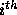

| Arbitrage |
The use of computers in the finance industry has been marked with controversy lately as programmed trading -- designed to take advantage of extremely small fluctuations in prices -- has been outlawed at many Wall Street firms. The ethics of computer programming is a fledgling field with many thorny issues.
Arbitrage is the trading of one currency for another with the
hopes of taking advantage of small differences in conversion rates among
several currencies in order to achieve a profit.
For example, if $1.00 in U.S. currency buys 0.7 British pounds
currency, £1 in British currency buys 9.5 French francs, and 1
French franc buys 0.16 in U.S. dollars, then an arbitrage trader can
start with $1.00 and earn  dollars thus earning a profit of 6.4 percent.
dollars thus earning a profit of 6.4 percent.
You will write a program that determines whether a sequence of currency exchanges can yield a profit as described above.
To result in successful arbitrage, a sequence of exchanges must begin and end with the same currency, but any starting currency may be considered.
The input file consists of one or more conversion tables. You must solve the arbitrage problem for each of the tables in the input file.
Each table is preceded by an integer n on a line by itself giving the dimensions of the table. The maximum dimension is 20; the minimum dimension is 2.
The table then follows in row major order but with the diagonal
elements of the table missing (these are assumed to have value 1.0).
Thus the first row of the table represents the conversion rates between
country 1 and n-1 other countries, i.e., the amount of currency of
country i (  ) that can be purchased with one unit of
the currency of country 1.
) that can be purchased with one unit of
the currency of country 1.
Thus each table consists of n+1 lines in the input file: 1 line containing n and n lines representing the conversion table.
For each table in the input file you must determine whether a sequence of exchanges exists that results in a profit of more than 1 percent (0.01). If a sequence exists you must print the sequence of exchanges that results in a profit. If there is more than one sequence that results in a profit of more than 1 percent you must print a sequence of minimal length, i.e., one of the sequences that uses the fewest exchanges of currencies to yield a profit.
Because the IRS (United States Internal Revenue Service) notices lengthy transaction sequences, all profiting sequences must consist of n or fewer transactions where n is the dimension of the table giving conversion rates. The sequence 1 2 1 represents two conversions.
If a profiting sequence exists you must print the sequence of exchanges that results in a profit. The sequence is printed as a sequence of integers with the integer i representing the  line of the conversion table (country i). The first integer in the sequence is the country from which the profiting sequence starts. This integer also ends the sequence.
If no profiting sequence of n or fewer transactions exists, then the line
no arbitrage sequence existsshould be printed.
3 1.2 .89 .88 5.1 1.1 0.15 4 3.1 0.0023 0.35 0.21 0.00353 8.13 200 180.559 10.339 2.11 0.089 0.06111 2 2.0 0.45
1 2 1 1 2 4 1 no arbitrage sequence exists